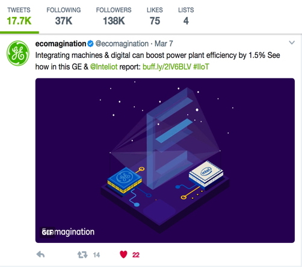

Intel
Energy-saving campaign · Web & social animation
Overview
My client came to me wanting to explain the future of energy saving. They needed specific web animations for their website, as well as short, shareable pieces that could support growth and reach on social media.
The challenge was to make a technical story clear at a glance, whether someone encountered it on a full web page or while scrolling through a social feed.
Approach
I translated the story into a family of isometric animations. Each piece focused on one idea: a partnership, savings, smarter machinery, or a connected network.
A shared visual language and carefully sequenced motion tied the series together. The aim was to make the ideas understandable, memorable, and easy to share—not just to add movement.
The animations
These animations are silent. Use each video’s controls to play or pause it.
Connecting the partnership
A central “E” builds above the GE and Intel chips, bringing environmental and economic benefit into one visual. Travelling paths connect the two brands.
Making savings visible
Money-marked blocks rise and fall across an isometric grid. Their changing heights give an abstract savings message a simple, visible form.
Explaining the machinery
An industrial machine opens into its component parts, surrounded by sensors and connected paths. The animation makes the relationship between the machine and its monitoring systems easier to follow.
Showing the network
Coloured signals travel between a cloud and connected energy and device icons. The repeating paths explain the idea of a system that shares information rather than a set of isolated parts.
From illustration to code
Break the scene into parts
I separated the scenes into components—chips, machines, tiles, icons, and paths—so their movement could be controlled individually.
Choreograph the motion
In code, I sequenced position, rotation, scale, and reveals. Shared timing and staggered starts guided the eye through the story instead of making everything move at once.
Build a repeatable loop
I refined the pacing and the transition back to the start, so each piece could repeat without an abrupt reset or a long explanation.
Prepare it for both channels
I checked the framing at different sizes and balanced detail with file weight. Each animation needed to work inside a website and stand on its own in a social feed.
A successful campaign
The campaign was a success. The animations gave the client a clear, recognisable way to explain an otherwise abstract energy-saving story and carry it across web and social media.
One of the pieces appeared in GE’s ecomagination social campaign, shown here. It’s an example of the work doing what it was made for: communicating the idea in a format people could watch and share.
